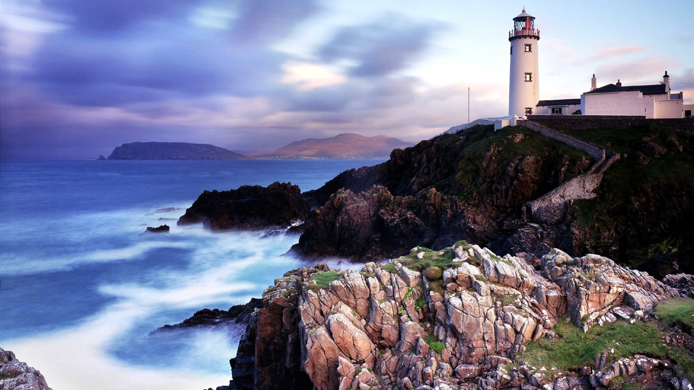
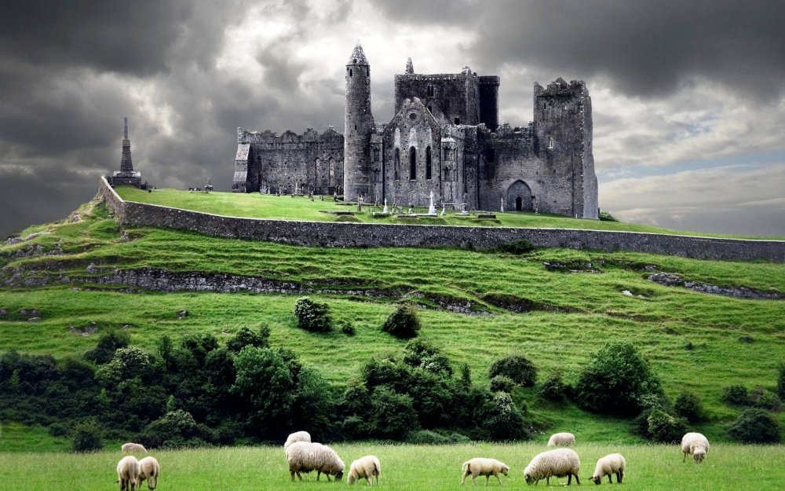

A Irlanda é a terra dos leprechauns e das fadas, de druidas e celtas, de conquistas vikings e de reis. De St. Patrick (São Patrício), tão popular que ganha festas animadas a cada 17 de março onde quer que haja uma comunidade irlandesa, mesmo fora do país. Da cor verde e do "shamrock", amuleto em forma de trevo, presente em dez entre as dez lembrancinhas que os visitantes levam para casa. Do inglês carregado de um diferente – e charmoso – sotaque e das placas escritas também em gaélico, o segundo idioma local (seguido do inglês).
A Irlanda é um país que está em destaque no cenário mundial ultimamente, devido à sua excelente qualidade de vida, desenvolvimento e demais características que tornam um dos melhores países para se viver. Se você está pensando em visitar o país ou mesmo morar lá, então você precisa de saber tudo sobre a Irlanda.
A Irlanda é uma ilha localizada na Europa Ocidental, a ilha é dividida em dois países, a República da Irlanda e a Irlanda no Norte. A República da Irlanda é um país independente e ocupa a maior parte da ilha situada a oeste da Grã-Bretanha. É denominada de “Ilha Esmeralda” por sua paisagem de tons verdes exuberantes. Mas, além das paisagens e construções históricas, a Irlanda é conhecida pela cultura de grande influência celta e também pela famosa cerveja Guiness.
Não é a toa que Intercâmbio em Dublin é uma das opções mais procuradas. O lema de Dublin é "a breath of fresh air" ("um sopro de ar fresco"), mas bem que poderia envolver a palavra "hospitalidade": em várias ocasiões, a capital da Irlanda foi eleita "a cidade mais amigável da Europa" por diversas revistas e sites especializados em turismo. Com passado viking, construções medievais e uma vocação literária invejável – da cidade saíram três dos quatro prêmios Nobel de literatura do país –, Dublin é moderna e histórica ao mesmo tempo, musical e animada.
| Tabela de Informações | |||
| Capital | Dublin | ||
| Área | 70.273 km² | ||
| Moeda | Euro | ||
| Governo | República parlamentarista | ||
| Presidente | Michael Higgins V | ||
| População | 4,904 Milhões | ||
| Principais Cidades | Dublin, Cork, Galway, Limerick, Bray | ||
| Idioma | Inglês, gaélico e irlandês | ||
| PIB | 224,73 Bilhões de Dólares | ||
| PIB Per Capita | 46.769 Dólares | ||
Diferente de muitos destinos europeus, a Irlanda nunca foi famosa por sua culinária, mas isso não exclui o país de ter uma gastronomia interessante e cheia de sabor. Apesar de muitas receitas irlandesas serem simples e com poucos ingredientes, o país tem uma culinária única. Aqui está uma receita para lhe mostrarmos o quão saboroso essa culinária pode ser!
Infelizmente, a Irlanda não é um país muito ensolarado. Tanto que a maior temperatura já registrada por lá foi de 33°C, o que comparado com o Brasil é uma temperatura bem normal para o verão, né?! Essa ausência do astro rei também influencia nas máquinas de lavar, que também são secadoras. Ainda bem!
Há boatos de que existem aproximadamente 13 milhões de galinhas na Irlanda. Isso equivale a mais ou menos três galinhas para cada habitante do país!
Nem a população, nem a polícia usam armas. A Garda Siochána (nome oficial da polícia irlandesa) é respeitada e a criminalidade do país é baixa. Dublin, por exemplo, é considerada uma cidade pacífica, principalmente quando comparada a grandes centros urbanos pelo mundo.
A Irlanda é uma república, ou seja, é governada por um presidente que é escolhido por meio de eleições. O mandato presidencial acontece a cada 7 anos e o presidente pode ser reeleito uma vez.
A irlanda é conhecida por seus belos pontos turisticos no caso os castelos, que são antigas moradias feitas na epoca medieval e que até hoje ainda continuam ilesas assim sendo ponto turisticos pra quem ama um pouquinho de história
